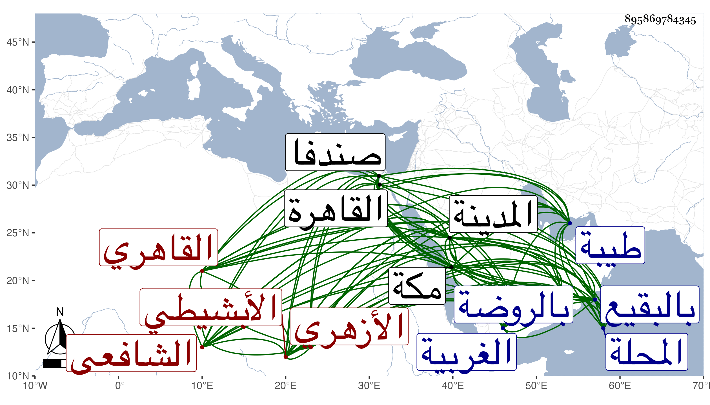

0902Sakhawi.DawLamic.ITO20230111-ara1.EIS1600.895869784345
Biography ID: 895869784345
أحمد بن إسماعيل بن أبي بكر بن عمر بن بريد بموحدة وراء وآخره دال أو هاء مصغر ويقال خلد بدله فلعله اسمه والآخر لقبه الشهاب الأبشيطي ثم القاهري الأزهري الشافعي نزيل طيبة وأحد السادات . ولد في سنة اثنتين وثمانمائة بابشيط بكسر الهمزة ثم موحدة ساكنة بعدها معجمة ثم تحتانية وطاء مهملة قرية من قرى المحلة من الغربية ونشأ بصندفا فحفظ القرآن وكتبا منها العمدة والتبريزي ، وأخذ بها الفقه عن البدر بن الصواف والشهاب ابن حميد وولي الدين بن قطب وتلا لأبي عمرو على أحمد الرمسيسي البحيري ثم انتقل إلى القاهرة في سنة عشرين فقطن جامع الأزهر مدة وأخذ بها الفقه عن البرهان البيجوري والشمس البرماوي والولي العراقي والشهاب السيرجي وآخرين منهم القاياتي وعنه وعن ابن مصطفى القرماني والعز عبد السلام البغدادي أخذ المنطق وأخذ النحو عن الشهاب أحمد الصنهاجي والشمس الشطنوفي وناصر الدين البارنباري والمحب بن نصر الله وعنه أخذ فقه الحنابلة والفرائض والحساب والجبر والمقابلة وغيرها عن ابن المجدي والبارنباري تلميذ ابن الهائم وأصول الدين والمعاني والبيان عن البدرشي وأصول الفقه عنه وعن القاياتي والمحلى والمحب بن نصر الله والشرف السبكي وقال أنه كان علامة في حل المنهاج الأصلي لا يلحق فيه وسمع على الولي العراقي والتلواني وابن نصر الله وابن الديري وآخرين منهم شيخنا بل كتب عنه في الإملاء وغيره وكان كثير الإعتقاد فيه حتى أن البهاء ابن حرمي حكى لي أنه قال أحب ملاحظتكم لي في أحوالى فقد كان شيخنا ابن حجر اذا طرألى أمر أعرضه عليه فيفرجه الله فقال لي فلا تقطع توجهك إليه بعد موته فإنه يكفيك وكذا بلغني أن شخصا سأله أن يريه بعض أولياء الله فمشى به إلى بيت المحلى وقال هذا بيت شخص منهم ، وكان مع ملازمته للقاياتي ربما يتعرض له فيما لم يعلم سببه بحيث أن جماعة تعصبوا وأهانوه بل حموا ابن المبارزي على إهانته وبعد ذلك سكن ولزم الاشتغال حتى برع في الفقه وأصوله والعربية والفرائض والحساب والعروض والمنطق وغيرها ونزل في صوفية الحنابلة المؤيدية أول ما فتحت لشدة فاقته وحفظ مختصر الخرقي وصار يحضر عند مدرسهم العز البغدادي فمن بعده مع أقرائه فقه الشافعية وقد تصدى للإقراء فانتفع به جماعة وممن أخذ عنه ابن أسد والشرف يحيى البكري والجوجري وآخرون طبقة بعد أخرى وصنف ناسخ القرآن ومنسوخه ونظم أبي شجاع والناسخ والمنسوخ للبارزي وشرح الرحبية والمنهاج وابن الحاجب الأصليين وتصريف ابن مالك ولا ميته والجمل للخونجي وإيساغوجي والخزرجية ولسان الأدب لابن جماعة وخطبة المنهاج الفرعي وله الحاشية الجلية السنية على حل تراكيب ألفاظ الياسمينية في الجبر والمقابلة لخصها من شرحها لابن الهائم والتحفة في العربية في مجلد ومنظومة في المنطق وأفراد مثلثة وروى الصادي وعجالة الغادي وغير ذلك وعرف بالزهد والعبادة ومزيد التقشف والإيثار والانعزال والإقبال على وظائف الخير وكونه مع فقره جدا بحيث لم يكن في بيته شئ يفرشه لا حصير ولا غيره بل ينام على باب هناك كان يتصدق من خبزه بالمؤيدية إلى أن كان في موسم سنة سبع وخمسين فحج وزار النبي صلى الله عليه وسلم بالمدينة الشريفة وانقطع عنده بها وعظم انتفاع أهلها به في العلم والإيثار وحفظوا من كراماته وبديع إشاراته ما يفوق الوصف وكان بينهم كلمة إجماع وبالغ هو في إكرامهم وفي وصفهم بخطه فيما يكتبه لهم يترجى اتصافهم بذلك وصار في غالب السنين يحج منها بل جاور بمكة في سنة إحدى وسبعين وكنت هناك فكثر اجتماعي به واستئناسي بمحادثته وأقبل ولله الحمد علي بكليته وسمعت من فوائده ومواعظه وكنت أبتهج برؤيته وسماع دعواته وكان على قدم عظيم من الاشتغال بوظائف العبادة صلاة وطوافا ومشاهدة وتلاوة وإيثارا وتقشفا وتحرزا في لفظه بل وغالب أحواله منعزلا عن أهلها البتة وربما جلس في بعض مجالس الحديث بأطراف الحلقة وحاوله جماعة في الإقراء فما وافق بل امتنع من التحديث في المدينة أدبا مع أبي الفرج المراغي فيما قيل والظاهر أنه للأدب مع النبي صلى الله عليه وسلم ولا زال في ترق من الخير وأخباره ترد علينا بما يدل على ولايته حتى مات بعد أن توعك قليلا بالحمى بعد عصر يوم الجمعة تاسع رمضان سنة ثلاث وثمانين وصلى عليه صبح يوم السبت بالروضة ثم دفن بالبقيع وكان له مشهد حافل جدا وتأسف الناس خصوصا أهل المدينة على فقده وقبره ظاهر يزار رحمه الله وإيانا ونفعنا ببركاته ، ومما سمعته من نظمه :
| المنجيات السبع منها الواقعه | وقبلها يس تلك الجامعه |
| والخمس الانشراح والدخان | والملك والبروج والإنسان |
ووصفه البقاعي بالشيخ الفاضل البارع المفنن الزاهد الشافعي ثم الحنبلي وأنه جاور بالمدينة أكثر من عشرين سنة وانتفع به أهلها وأنه امتنع من إخباره بمولده .
